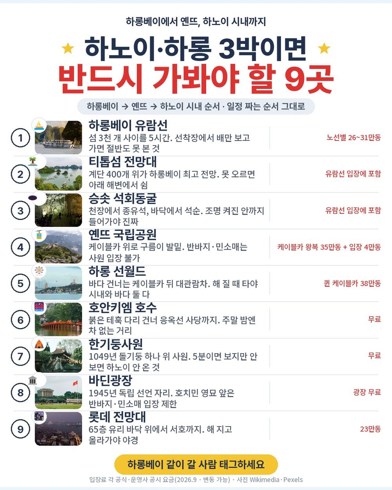
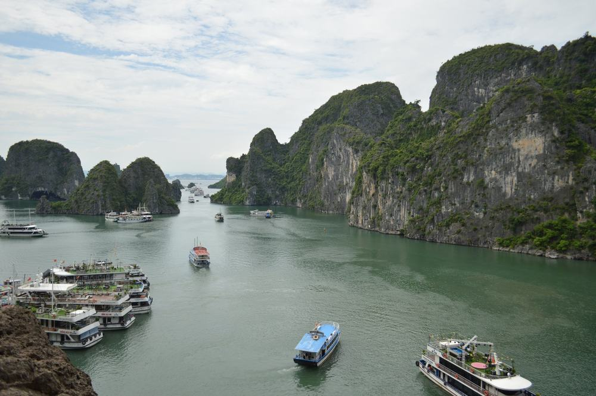
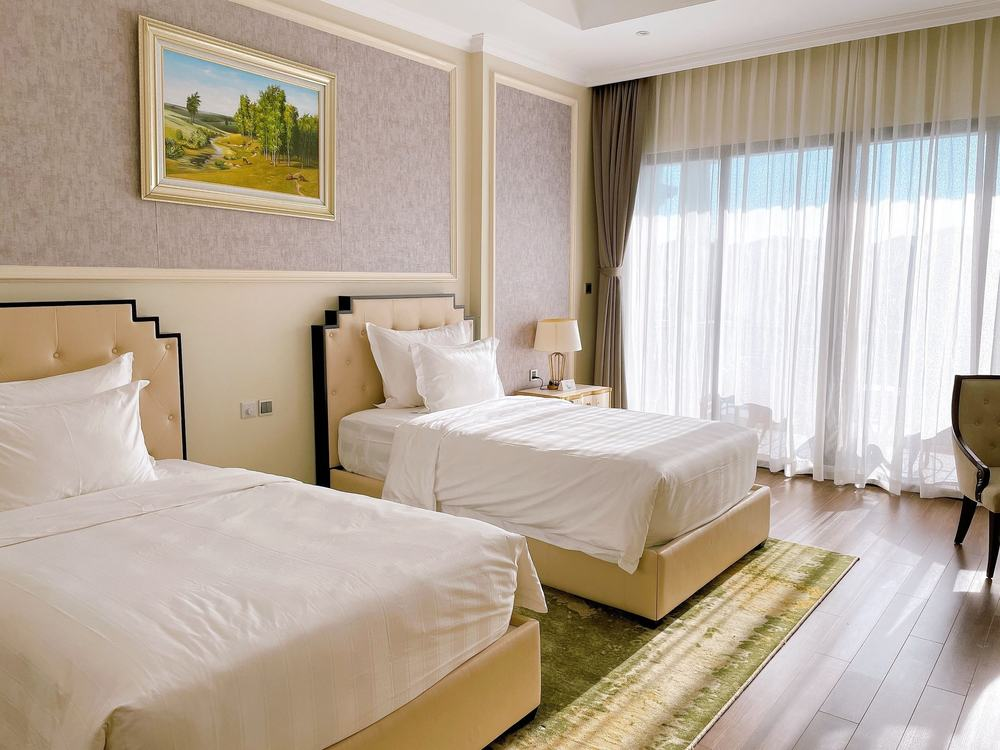
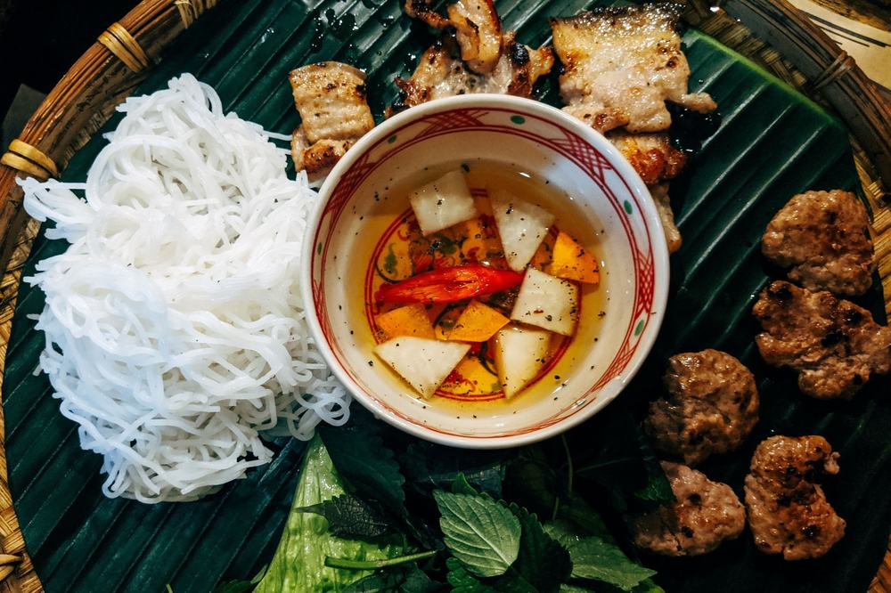
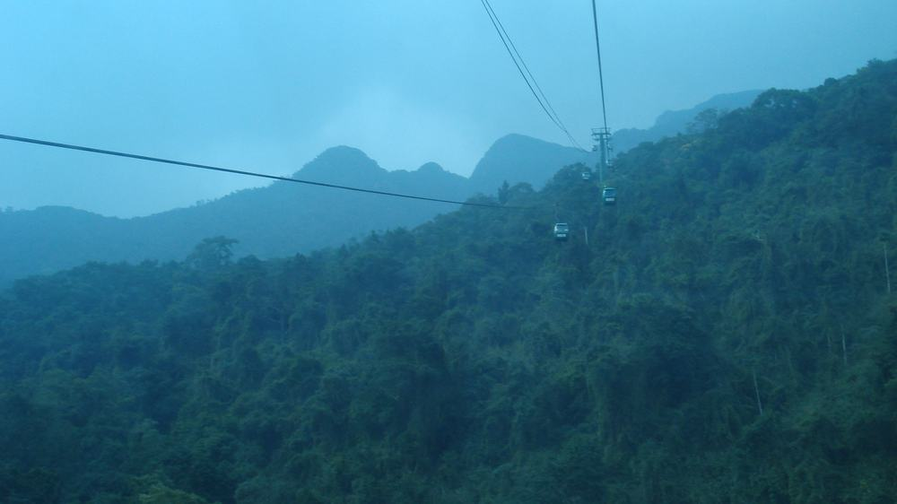
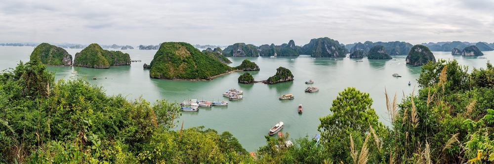
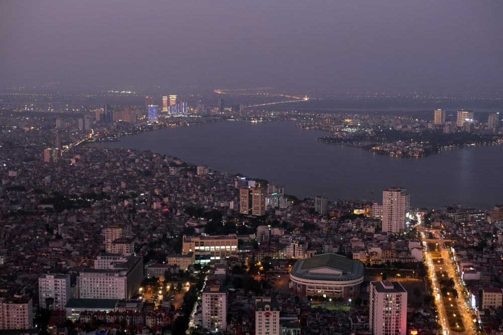
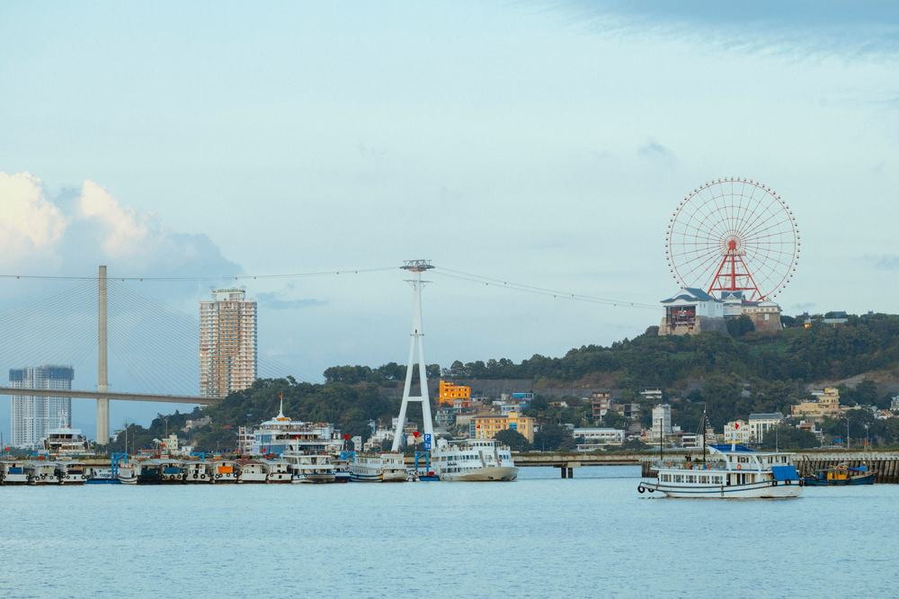

결론 — 추천. 하롱베이 유람선을 처음 타 보실 분, 선택관광 권유 없이 다 포함된 걸 원하는 분, 연차를 아끼려 저녁 출발·새벽 귀국이 괜찮은 분에게 맞음. 밤 비행기가 힘든 분, 버스 5시간을 못 견디는 분, 쇼핑 매장 방문이 싫은 분은 고르면 안 됨.
부모님 첫 베트남 북부 여행을 알아보다가 49만 9천원짜리에 하롱베이 유람선 5시간, 스피드보트, 옌뜨 케이블카, 롯데 전망대, 마사지 90분이 다 들어 있는 게 보여서 붙잡았음. 보통 이 값이면 선택관광이 서너 개 붙는데 이건 0개임. 어디까지가 진짜 포함인지 항목별로 뜯어봤음.

| 항목 | 내용 |
|---|---|
| 여행사 | 참좋은여행 |
| 가격 | 499,000원 (1인 · 성인 기준 · 10월 초 출발) |
| 일정 | 3박 5일 · 저녁 7시 55분 출발 · 새벽 6시 40분 귀국 |
| 항공 | 파라타항공 직항 (인천-하노이 4시간 55분 · 기내식 없음 · 위탁 15kg) |
| 숙소 | 노보텔 하노이 타이하 1박 + 하얏트 플레이스 하롱베이 2박 (또는 동급) |
| 가는 곳 | 옌뜨 케이블카 · 하롱베이 유람선(동굴·티톱섬) · 스피드보트 · 수상인형극 · 하롱 테마파크 · 하노이 시내(한기둥사원·바딘광장·36거리·호안키엠·성요셉성당) · 롯데 전망대 |
| 반드시 더 내는 돈 | 가이드·기사 경비 US$50 (현지 지불) + 매너팁 약 US$10 |
결론부터 말하면 같은 동선을 직접 짜면 30만원 가까이 더 듦. 하롱베이 유람선·스피드보트·옌뜨 케이블카·테마파크·전망대 입장을 따로 사는 값이 크고, 하노이-옌뜨-하롱을 버스 한 대로 잇는 건 자유여행으로는 리무진을 두 번 갈아타야 함.
| 순서 | 다루는 것 | 한 줄 결론 |
|---|---|---|
| 1 | 구성 뜯어보기 | 식사 9회 자유식 0 · 선택관광 0 · 현지 필수는 US$50 + 팁 |
| 2 | 일정 살펴보기 | 첫날은 잠만, 둘째 날 옌뜨→하롱, 셋째 날 유람선, 넷째 날 하노이 시내 |
| 3 | 자유여행 VS 패키지 | 직접 짜면 87만원, 패키지는 경비까지 58만원 |
요약 — 항공·호텔 3박·식사 9회·관광 9곳 입장·마사지·스피드보트·전망대·가이드·보험까지 49만 9천원. 현지에서 반드시 내는 건 가이드·기사 경비 US$50과 매너팁 US$10 안팎. 다만 밤 비행기이고 쇼핑이 2회 있음.
1인 49만 9천원임. 3박 5일 기준임.
| 항목 | 상태 |
|---|---|
| 왕복 항공권 | 포함 (파라타항공 직항 · 세금·유류할증 포함 · 기내식 없음) |
| 노보텔 하노이 타이하 1박 | 포함 (2인 1실 · 조식) |
| 하얏트 플레이스 하롱베이 2박 | 포함 (2인 1실 · 조식 2회 · 2025년 4월 개관) |
| 식사 9회 | 포함 (자유식 0 · 석식 3회 한식 · 선상 씨푸드 · 분짜 정식) |
| 관광 9곳 | 옌뜨 케이블카 · 하롱베이 유람선 · 석회동굴 · 티톱섬 · 수상인형극 · 한기둥사원 · 바딘광장 · 호안키엠 · 스트리트카 입장 포함 |
| 노옵션 포함 | 마사지 90분 · 스피드보트 비경투어 · 선상 씨푸드 · 하롱 테마파크(케이블카+대관람차) · 혼가이 시장 · 롯데 전망대 · 루프탑 음료 1잔 · 망고빙수 (상품 표기 US$260 상당) |
| 한국어 가이드 · 전용 버스 | 포함 (공항 밖 지정 장소부터 전 일정) |
| 여행자보험 | 포함 (최고 1억원) |
| 가이드·기사 경비 US$50 | 불포함 (현지 지불 · 성인·아동 동일) |
| 매너팁 | 불포함 (마사지 $6~7 · 스피드보트 $2 · 스트리트카 $1) |
| 인솔자 | 불포함 항목 (한국어 가이드가 전 일정 동행) |
| 쇼핑 | 2회 (노니&침향 · 커피 · 각 약 60분 · 환불 불가) |
| 선택관광 | 없음 |
베트남 패키지는 가이드·기사 경비를 현지에서 달러로 걷는 게 보통이고 이 상품도 그럼. US$50이면 우리 돈 7만원 안팎임. 상품가에 이걸 더해서 1인 57만원으로 보면 됨.
| 항목 | 금액 | 비고 |
|---|---|---|
| 가이드·기사 경비 | US$50 (약 7만원) | 필수 · 현지 달러 현금 |
| 매너팁 | 약 US$10 (약 1만 4천원) | 마사지 $6~7 · 스피드보트 $2 · 스트리트카 $1 |
| 첫날 공항 저녁 | 약 1만원 | 기내식이 없어 출발 전 인천공항에서 |
| 음료·주류 | 끼니당 1천~3천원 | 식사에 나오는 음료 외 |
| 합계 (필수만) | 약 8만 4천원 | 공항 저녁까지 약 9만 4천원 |

첫 밤은 하노이 시내 노보텔 하노이 타이하임. 프랑스 아코르 체인, 시내 서쪽 동다 지구. 밤 10시 50분에 내려 자정 무렵 들어가서 아침에 나오는 하루라 위치보다 침대가 중요한데 노보텔이면 걱정 없음. 2인 1실 조식 포함.
둘째·셋째 밤이 하얏트 플레이스 하롱베이. 2025년 4월에 문을 연 새 호텔이고, 하롱 관광 중심인 바이짜이 쪽이라 선착장과 테마파크가 가까움. 야외 수영장·피트니스·바가 있고 조식 2회 포함. 3일차 저녁 망고빙수도 여기서 줌.
어디서 확인하나 — 「숙박」 칸에 노보텔 하노이 타이하 / 하얏트 플레이스 하롱베이가 적혀 있음. 다만 「핵심 안내」에 '호텔은 현재 미정이며 출발 2~3일 전 SMS 안내, 동급 변경 가능' 문구가 있음. 브랜드는 정해져 있으니 예약 전화에서 한 번 확인함.

식사는 9회임. 2일차 조식·현지식·한식, 3일차 조식·선상 씨푸드·한식, 4일차 조식·분짜 정식·한식. 자유식이 한 끼도 없음. 저녁 세 번이 다 한식이라 입맛 걱정도 적음. 1일차와 5일차는 비행기 시간이라 식사가 없고, 파라타항공은 기내식이 없어 출발 전 인천공항에서 저녁을 먹고 타야 함.
어디서 확인하나 — 일정표 각 날 식사 칸에서 '자유식' 글자를 셈. 이 상품은 0임. '선상식'·'분짜 정식'처럼 특식 이름이 적혀 있는지도 봄. 기내식 여부는 1일차 항공편 설명에 적혀 있음.

이 상품은 선택관광 항목이 아예 없음. 다른 상품에서 선택관광으로 파는 마사지·스피드보트·전망대·테마파크가 전부 상품가 안에 들어 있고, 상품 페이지는 이걸 US$260 상당이라 적어 놨음. 쇼핑은 4일차 오전 하롱→하노이 이동길에 노니&침향 매장과 커피 매장, 각 약 60분. 구매 자유, 환불 불가.
어디서 확인하나 — 상품 페이지 「선택관광」 칸이 비어 있는지 봄. 「쇼핑」 칸에서 매장 수·시간·'환불' 표시를 봄. 「핵심 안내」 Check2 에 노옵션 포함 항목과 상당액이 적혀 있음.
출발일별 요금 확인하기
https://naver.me/xrz3tmn0
| 질문 | 답 |
|---|---|
| Q. 쇼핑 없나요? | 2회 있음. 4일차 오전 노니&침향 매장과 커피 매장 각 약 60분, 구매는 자유 |
| Q. 가이드 경비는 따로 내나요? | 냄. 1인 US$50을 현지에서 달러로 지불함. 아동도 같음 |
| Q. 출발확정인가요? | 아님. 실시간 좌석 확인이 필요한 상품이라 예약 후 담당자 전화에서 확정 여부를 안내함 |
요약 — 1일차 저녁 7시 55분 출발, 밤 10시 50분 도착해 노보텔. 2일차 옌뜨 케이블카 → 하롱 수상인형극·마사지. 3일차 하롱베이 유람선 5시간·스피드보트·테마파크. 4일차 하노이 시내와 롯데 전망대, 새벽 0시 20분 비행기. 버스는 나흘에 약 10시간임.
| 일차 | 가는 곳 | 식사 | 숙소 |
|---|---|---|---|
| DAY 1 | 인천 19:55 출발 → 하노이 22:50 | 없음 (기내식 X) | 노보텔 하노이 타이하 |
| DAY 2 | 옌뜨 국립공원 케이블카 → 하롱 · 수상인형극 · 마사지 90분 | 조식 · 현지식 · 한식 | 하얏트 플레이스 하롱베이 |
| DAY 3 | 하롱베이 유람선 5시간(석회동굴·티톱섬) · 스피드보트 · 선상 씨푸드 · 테마파크 · 혼가이 시장 · 망고빙수 | 조식 · 선상식 · 한식 | 하얏트 플레이스 하롱베이 |
| DAY 4 | 쇼핑 2회 → 하노이 · 분짜 정식 · 한기둥사원 · 바딘광장 · 호치민 생가 · 36거리 스트리트카 · 호안키엠 · 성요셉성당 · 롯데 전망대 | 조식 · 분짜 · 한식 | — (밤 공항) |
| DAY 5 | 하노이 00:20 출발 → 인천 06:40 | 없음 | — |

인천공항 17시 미팅, 19시 55분 출발, 22시 50분 하노이 도착임. 공항 밖에서 한국어 가이드를 만나 40분쯤 달려 노보텔. 자정 무렵 체크인이라 첫날은 잠만 잠. 대신 그날 오전은 집에서 쓸 수 있음.
하노이 → 옌뜨 2시간 40분, 옌뜨 → 하롱 2시간 30분. 버스만 5시간 10분임. 옌뜨는 베트남 불교 성지라 케이블카 뒤에 사원까지 걷고, 반바지·민소매는 입장이 제한됨. 하롱 도착 후 수상인형극 1시간, 전신 마사지 90분(매너팁 $6~7).
어디서 확인하나 — 일정표 2일차에 '옌뜨 국립공원 (케이블카 포함)'이 적혀 있는지 봄. '옌뜨 관광'만 적힌 상품은 걸어 올라가는 경우가 있음. 마사지는 '아동제외 · 매너팁 별도' 문구를 봄.
| 일차 | 구간 | 시간 |
|---|---|---|
| DAY 1 | 공항 → 노보텔 | 약 40분 |
| DAY 2 | 하노이 → 옌뜨 → 하롱 | 약 5시간 10분 |
| DAY 3 | 하롱 시내 이동 | 약 1시간 |
| DAY 4 | 하롱 → 하노이 · 시내 → 공항 | 약 3시간 30분 |
| 합계 | 약 10시간 |
하롱베이 유람선 약 5시간. 석회동굴에 들어가고, 티톱섬은 계단 약 400개 위 전망대가 있는데 안 올라가도 됨 — 아래 작은 해변에서 쉬면 됨. 유람선에서 스피드보트로 갈아타 기암 사이 라군까지 들어가고, 점심은 배 위에서 새우·게·조개를 바로 요리해 줌. 오후는 하롱 테마파크 케이블카+대관람차, 혼가이 재래시장, 저녁 후 호텔에서 망고빙수(2인 1개).

오전 쇼핑 2회 후 하노이로 2시간 30분. 점심 분짜 정식, 오후 한기둥사원·바딘광장·호치민 생가(월·금 휴관 시 문묘/옥산사 대체), 36거리 스트리트카(매너팁 $1)·호안키엠·성요셉성당, 저녁 롯데 전망대 65층과 루프탑 음료 1잔. 한식 저녁 후 공항으로 가서 00시 20분 출발, 인천 06시 40분 도착.

| 질문 | 답 |
|---|---|
| Q. 많이 걷나요? | 옌뜨 사원과 티톱섬 계단이 걷는 구간임. 티톱섬은 선택이고 하노이 시내는 전기차가 대신 움직임 |
| Q. 10월 초에 덥나요? | 낮 26~30도, 아침저녁 22도 안팎. 건기로 접어드는 시기라 우산 하나·겉옷 하나 |
| Q. 새벽 비행기 힘들지 않나요? | 4일차 저녁 식사 후 공항 이동, 00:20 출발 06:40 도착. 기내에서 자고 그날 하루가 남음. 밤 비행기가 힘든 분은 낮 출발 상품을 보는 게 맞음 |
요약 — 같은 동선을 직접 짜면 1인 87만원쯤 나오고, 패키지는 가이드 경비와 팁을 더해 58만원임. 패키지가 30만원 가까이 쌈. 유람선·스피드보트·케이블카·테마파크·전망대 입장을 따로 사는 값이 크고, 하노이-옌뜨-하롱을 하루에 잇는 건 리무진 두 번이 필요하기 때문임.
같은 동선을 직접 짜면 얼마인지 계산해봤음. 패키지에 들어 있는데 자유여행이면 따로 내야 하는 돈까지 전부 넣었음. 환율은 US$1 = 1,400원, 1만동 = 560원으로 잡았음. 대부분 추정치라 근거 열에 적어 뒀음.
| 항목 | 자유여행 | 패키지 | 근거 |
|---|---|---|---|
| 왕복 항공 | 약 30만원 | 포함 | 인천-하노이 LCC 10월 왕복 25~35만원대 (항공권 비교 사이트 월별 조회 · 추정) |
| 노보텔 하노이 1박 | 약 6만원 | 포함 | 트윈 1박 12만원 안팎 ÷ 2 (추정) |
| 하얏트 플레이스 하롱 2박 | 약 14만원 | 포함 | 트윈 1박 14만원 안팎 ÷ 2 × 2 (추정) |
| 식사 9끼 | 약 9만원 | 포함 | 끼당 1만원 (한식·선상 씨푸드 포함 평균 · 추정) |
| 하노이 → 옌뜨 → 하롱 → 하노이 교통 | 약 5만원 | 포함 | 리무진 버스 2회 + 옌뜨 구간 택시 (추정) |
| 옌뜨 케이블카 + 입장 | 약 2만 2천원 | 포함 | 왕복 35만동 + 입장 4만동 (Sun Paradise Land 2026.2 공시) |
| 하롱베이 유람선 5시간 (동굴·티톱·점심) | 약 5만원 | 포함 | 하롱 선착장 출발 데이 크루즈 + 노선 입장료 26~31만동 (추정) |
| 스피드보트 비경투어 | 약 5만원 | 포함 | 상품 표기 US$50 상당 기준 |
| 하롱 테마파크 케이블카 | 약 2만 1천원 | 포함 | 퀸 케이블카 38만동 (sunworld.vn 공식 가격표) |
| 롯데 전망대 | 약 1만 3천원 | 포함 | 성인 23만동 (롯데센터 하노이 공시) |
| 수상인형극 + 마사지 90분 | 약 3만 6천원 | 포함 | 인형극 약 10만동 + 마사지 90분 약 3만원 (추정) |
| 공항 ↔ 시내 | 약 3만원 | 포함 | 노이바이 ↔ 하노이 택시 왕복 (추정) |
| 여행자보험 | 약 1만원 | 포함 | 3박 5일 기준 |
| 가이드·인솔자 | 없음 | 한국어 가이드 (경비 US$50 현지) | 양쪽 다 US$50 기준으로 봄 |
| 합계 | 약 87만원 | 49만 9천원 + 가이드 경비 7만원 + 팁 1만 4천원 = 약 58만원 | 쇼핑 제외 |
숫자만 보면 패키지가 30만원 가까이 쌈. 유람선·스피드보트·케이블카·테마파크·전망대를 따로 사면 그것만 15만원이 넘고, 그걸 상품가 안에 넣은 것임.
그리고 표에 못 넣은 게 있음. 하노이-옌뜨-하롱을 하루에 잇는 건 대중교통으로 안 됨. 옌뜨는 하노이-하롱 사이에서 산 쪽으로 빠져 있어 리무진을 내려 택시를 다시 잡아야 하고, 케이블카 시간까지 맞추면 하루가 빠듯함. 버스 한 대가 나흘을 다 이어 주는 게 이 상품의 값어치임.

어디서 확인하나 — 자유여행으로 갈 거면 하노이-하롱 리무진 시간표와 옌뜨 케이블카 운행 시간을 먼저 봄. 옌뜨는 오후 늦게 케이블카가 끊기니 하노이에서 아침 일찍 나서야 함.
| 자유여행이 맞는 사람 | 패키지가 맞는 사람 |
|---|---|
| 하롱베이에서 1박 크루즈를 잘 것임 | 유람선은 낮에 5시간이면 충분함 |
| 하노이 시내에 오래 머물 것임 | 옌뜨·하롱·하노이를 한 번에 볼 것임 |
| 낮 비행기로 첫날부터 움직일 것임 | 저녁 출발·새벽 귀국으로 연차를 아낄 것임 |
| 베트남 북부를 두 번 이상 가봤음 | 부모님을 보내드림 |
| 질문 | 답 |
|---|---|
| Q. 환전은 얼마나 하나요? | 가이드 경비 US$50 + 팁 US$10 + 개인 비용. 상품 안내가 미국 달러로 환전하라고 적어 놨음. 1인 US$100이면 넉넉함 |
| Q. 혼자 가면 얼마 붙나요? | 싱글룸 사용료 200,000원이 전 일정 기준으로 붙음 |
| Q. 비자 필요한가요? | 불필요. 45일 무비자. 여권 유효기간은 출발일 기준 6개월 이상 |
49만 9천원에 파라타항공 직항, 노보텔 1박, 하얏트 플레이스 2박, 식사 9회(자유식 0), 하롱베이 유람선 5시간, 스피드보트, 옌뜨 케이블카, 수상인형극, 테마파크, 롯데 전망대, 마사지 90분까지 들어 있고 선택관광이 없음. 현지에서 반드시 내는 건 가이드·기사 경비 US$50과 팁 US$10 안팎임.
같은 동선을 직접 짜면 87만원이 나와서 패키지가 30만원 가까이 쌈. 값보다 더 큰 건 옌뜨와 하롱, 하노이를 버스 한 대가 이어 준다는 것임.
걸리는 건 밤 비행기, 2일차 버스 5시간, 쇼핑 2회, 호텔명 출발 2~3일 전 확정 이 넷임. 전부 상품 흠이 아니라 맞는 사람을 가르는 조건임. 낮 비행기로 가고 싶으면 다른 상품을 보면 되고, 값 대비 포함이 많은 게 목적이면 이 구성이 맞음.
출발일별 요금 확인하기
https://naver.me/xrz3tmn0
같은 기준으로 하노이·하롱베이 패키지 고르는 법만 따로 정리한 글도 있음 — https://blog.naver.com/robotnady10/224417473526
참좋은여행 나트랑 달랏 59만원, 5성 3박에 밥 9끼가 다 들어가는 이유
https://blog.naver.com/robotnady10/224417121855
노랑풍선 후쿠오카 69만원, 힐튼 하루에 온천 료칸 하루가 되는 이유
https://blog.naver.com/robotnady10/224415894031
이 글에는 제휴 링크가 포함되어 있으며, 링크를 통해 예약 시 일정 수수료를 받습니다. 가격은 동일합니다. 이 글은 10월 초 출발 기준이며, 출발일에 따라 가격이 달라집니다.